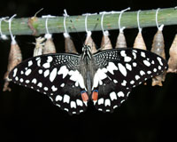
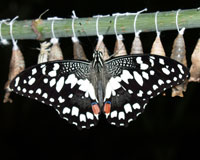

Продажа куколок бабочек
Продажа куколок тропических бабочек осуществляется по предварительному заказу.
Минимальная сумма заказа куколок тропических бабочек по Украине 100 у.е., по территории СНГ 200у.е.
Заказ считается принятым после согласования видов, количества куколок и проведения 100% оплаты заказа. Пересылка оплачивается дополнительно.
Тропические бабочки на стадии куколки находятся около одной- двух недель. Определение самца и самки на стадии куколки невозможно.
Процент выхода бабочек из куколок зависит от времени и условий транспортировки, условий созданных для выведения. При идеальных условиях процент выхода составляет 80-90%.
Внимание, куколок (как и бабочек ) нельзя класть в холодильник, морозильник, микроволновку, духовку, на батарею и т.д.
Условия содержания и выведение бабочек из куколок более подробно можно прочитать в нашей статье "Эффект бабочки" журнал ЭКЗО №7-8 2005 г .
Куколки крупных тропических бабочек размахом крыльев 12-15 см.
Troides rhadamantus
Удивительно эффектное сочетание ослепительного золотого цвета с черным бархатом. Полет ее плавный, царственный, но при этом быстрый. В природе на Филиппинах встречаются редко, размах до 15 см. Цена одной куколки 3,5 доллара США.


Papilio palinurus
Яркое сияние бирюзовой полосы эффектно подчеркивает классической форму широких крыльев. Полет стремительный и быстрый. Размах крыльев до 12 см. Встречается в Бирме, Индонезии. Цена одной куколки 2 доллара США.


Papilio rumanzovia
Нижнюю сторону крыльев роскошно обрамляет малиново-красная окантовка, верхняя часть с синевато-серым напылением. Размах крыльев 14 см. Ареал обитания – Юго-Восточная Азия. Цена одной куколки 2 доллара США.


Papilio lowi
Очаровывает таинственный рисунок крыльев этой бабочки. И самец и самка имеют хвосты, по форме напоминающие каплю. Размах крыльев 14 см. Ареал обитания – Юго-Восточная Азия. Цена одной куколки 2 доллара США.


Papilio polytes
Самец и самка этого вида бабочки абсолютно различны как по рисунку так и по форме крыльев. Благодаря своему стремительному полету отлично подходят для "салютов". Размах крыльев до 12 см. Ареал обитания – Юго-Восточная Азия Цена одной куколки 1,5 доллара США.

Idea leuconoe
Отличается неспешным порхающим летом. Замысловатый волшебный узор крыльев напоминает нежный графический рисунок. Размах крыльев 14см. Ареал обитания – Юго-Восточная Азия Цена одной куколки 1,5 доллара США.


Danaus plexippus - Монарх
Дальние перелеты монархов в Северной Америке - классический пример миграции среди бабочек. Бабочки откладывают яйца на молодые растения рода асклепис (сем.ластовневых). Ярко-оранжевая окраска монарха отпугивает насекомоядных животных. Размах крыльев 8-10см. Южная Америка.Цена одной куколки 3 доллара США.
Caligo memnon
Своим рисунком, по исподу, имитирует глаза совы, отпугивая таким образом мелких птиц. В раскрытом виде крылья имеют благородные оттенки различных цветов. Размах крыльев 15-18 см. Встречается в экваториальных районах Южной Америки. Полет быстрый, иногда скачкообразный. Цена одной куколки 5 долларов США.

Morpho peleides
Ослепительное ярко-синее сияние крыльев этой бабочки завораживает.Это бабочки, собравшие всю синеву неба на своих крыльях, сияющих металлическим блеском с разнообразными оттенками. Южная Америка.Размах крыльев 16-18 см. Цена одной куколки 6 долларов США.

Pachliopta kotzebuea
Фоновый цвет удлиненных крыльев бархатисто-черный с легким зеленоватым отблеском. Задние крылья на исподе обрамлены цепочкой из ярко-красных пятен. Размах крыльев 8 см. Ареал обитания – Юго-Восточная Азия Цена одной куколки 1,5 доллара США.


Papilio anchisiades
Бабочки черные с красными пятнами на задних крыльях, а иногда с белыми на передних. Так они подражают ядовитым видам рода паридес. Южная Америка. Размах крыльев около 8 см.Цена одной куколки 3 доллара США.
Papilio polyxenis
Самцы этого вида занимают определенну возвышенность, привлекая самок своей яркой окраской. Встречается поликсена в Канаде, США, Центральной Америке и Амазонии. Размах крыльев около 8 см. Цена одной куколки 3 доллара США.
Siproeta epaphus
Бабочки обитают во влажных тропических лесах, расположенных на возвышенности. Самки откладывают яйца на молодые листья руеллии и акантуса (сем.акантоывх). Южная Америка.. Размах крыльев около 8 см. Цена одной куколки 3 доллара США.
Куколки небольших тропических бабочек размахом крыльев 8-12 см.
Parthenos silvia
На коричнево-бурых крыльях явно прослеживаются «леопардовые пятна» и «тигриные полосы».Размер-6-7см. Филиппины. Цена одной куколки 1,5 доллара США.


Papilio demoleus
Неповторимый мозаичный узор из пестрых ярко-желтых глазков. Размер – 6-7см. Таиланд. Цена одной куколки 1,5 доллара США.
 

Hebomoia glaucippe
У самцов этого вида концы передних крыльев ярко-оранжевые, у самок на крыльях много темных пятен. Гусеницы развиваются на киппарисе (сем. каперсовых). Размах крыльев до 10 см. Юго-Восточная Азия.Цена одной куколки 1,5 доллара США.

Cethosia biblis
Зубчатый край крыльев эффектно сочетается с основным ярко-малиновым переливающимся цветом. Размер – 6см. Филиппины. Цена одной куколки 1,5 доллара США.


Hypolimnas bolina
Тонкая светлая перевязь обрамляет темно-кофейные крылья с легким фиолетовым напылением. Размер - 6-7см. Индонезия. Цена одной куколки 1,5 доллара США.


Graphium doson Graphium agamemnon
Оба вида встречаются на островах Юго-Восточной Азии.Размер - 6-7см.Цена одной куколки 1,5 доллара США.

Условия оплаты
1.Если Вы находитесь в Киеве, то Вы можете оплатить свой заказ наличными курьеру
3. Оплата через систему денежных переводов Western Union (Вестерн Юнион), Анелик, Контакт. Реквизиты для перевода через эти системы предоставляются по запросу на наш email: zakurkin@mail.ru
Если у Вас возникли вопросы, ответы на которые Вы не нашли на нашем сайте, то свяжитесь с нами по телефону: +38 (093) 954-69-89 или email zakurkin@mail.ru
Часто задаваемые вопросы
Жизненный цикл бабочки выглядит следующим образом: яйцо - гусеница – куколка – бабочка. Разведение живых тропических бабочек очень кропотливое, трудоемкое занятие, требующее месяцев работы.
Требуются ли для инсектария специальные приборы для поддержания влажности, температуры и вентиляции?
Если у Вас нет опыта(или он небольшой), то лучше установить регулятор влажности, температуры и все сопутствующие приборы. Мы предлагаем специальное оборудование, которое автоматически поддерживает влажность и температуру. .
Возможно ли как-нибудь замедлить процесс развития куколки в бабочку?
Возможно, но только на несколько дней. Лучше этого не делать, т.к. при изменении температуры увеличится вероятность невыхода бабочек из куколок, а также количество нерасправившихся бабочек. Охлаждать можно только зимующие в куколках виды, но ни в коем случае не тропические.
Каковы способы и условия транспортировки?
Как правило, куколки бабочек передаются поездом (через проводника) или автобусом (через водителя). Куколки передаются только на начальных стадиях формирования в ней живой бабочки. В первую неделю после окукливани куколки могут быть подвергнуты кратковременному охлаждению до минус 10 градусов С практически без последствий, но лучше такие опыты не ставить. Перед выходом бабочки из куколки (куколки обычно темнеют и внутри просматривается рисунок крыльев)- куколки лучше даже не трогать, а тем более не переносить и не менять условия (температуру и влажность).